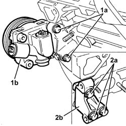
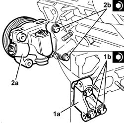

1016E21 L CYLINDER HEAD - OVERHAUL
- Path
- Procedures > 10 ENGINE UNIT > 1016 CYLINDER HEAD/S > 1016E CYLINDER HEAD/S - VARIOUS OPERATIONS > 1016E21 L CYLINDER HEAD - OVERHAUL
- Kind
- repair procedure (removal / refitting; the operation number is the code)
- Applies to
- engines: 3.2 V6; all production periods
- Interactive page
- https://sloeber94.github.io/elrnDB-aGt/en/#/125000910
Applies to: engines: 3.2 V6; all production periods
1. Undo the bolts (1a) and remove the power assisted steering pump (1b).
2. Undo bolts (2a) and remove power steering pump mounting (2b).

Applies to: engines: 3.2 V6; all production periods
Follow the same instructions as for the right cylinder head, taking into account that the following are not fitted on the left cylinder head: the bracket on the engine for the reaction rod and the timing belt moving tensioner.
Applies to: engines: 3.2 V6; all production periods
Follow the same instructions as for the right cylinder head, taking into account that the following are not fitted on the left cylinder head: the bracket on the engine for the reaction rod and the timing belt moving tensioner.
1. Place the power assisted steering pump mounting (1a) back in its housing and fix it tightening the bolts (1b) to the recommended torque.
 | Fastening | Component | Ø | Value (daNm) |
|---|---|---|---|---|
1b | Bolt | POWER STEERING PUMP SUPPORT/BRACKET | M8 | (Cylinder head side) 2.3 ÷ 2.8 |
2. Place the power assisted steering pump (2a) back in its housing and secure it by tightening the bolts (2b) to the recommended torque.
| Fastening | Component | Ø | Value (daNm) |
|---|---|---|---|---|
2b | Bolt | POWER STEERING PUMP | M8 | (Support side) 2.3 ÷ 2.8 |
